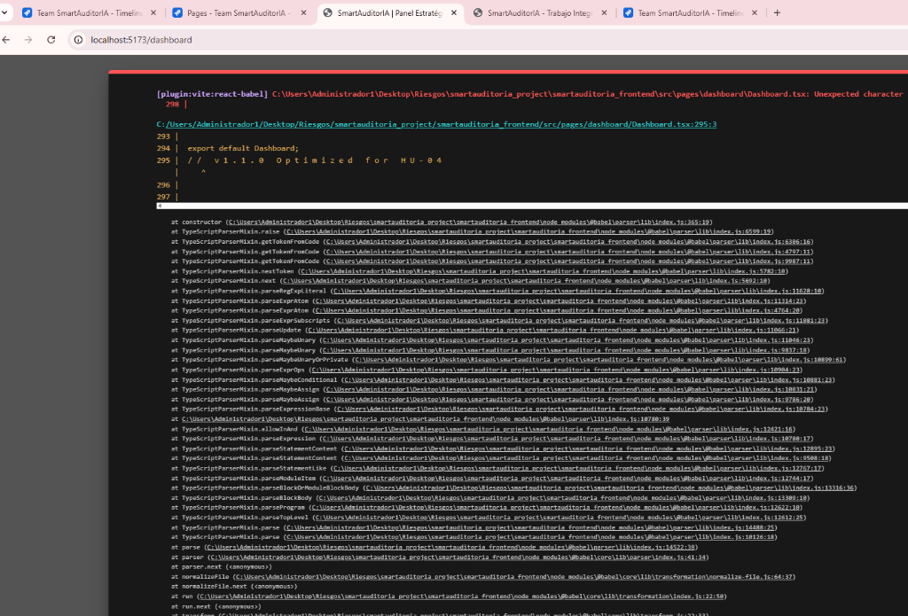
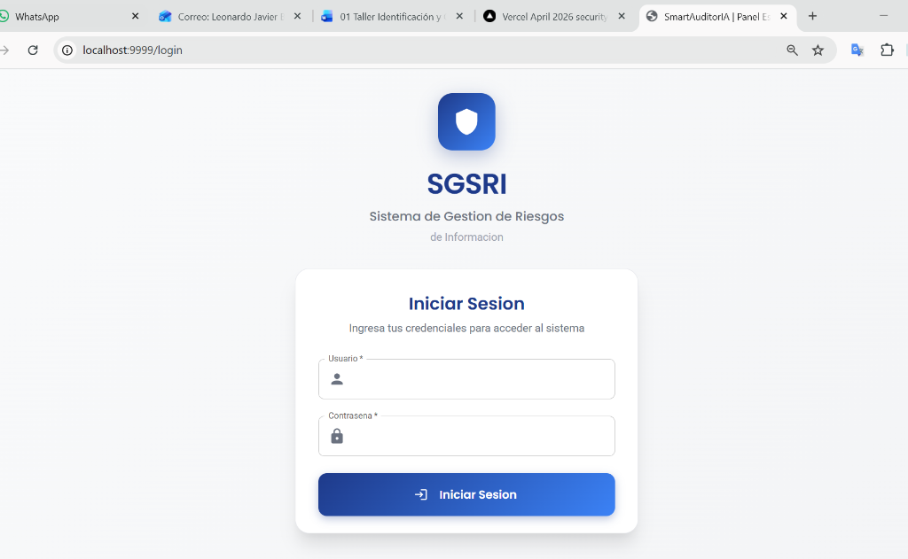
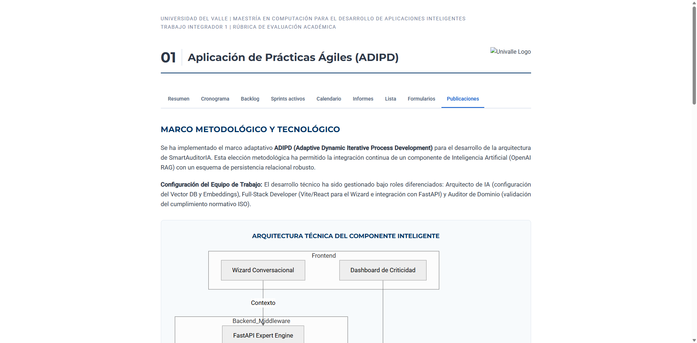

Aplicación de Prácticas Ágiles (ADIPD)
Se ha implementado una metodología Scrum Híbrida con un enfoque riguroso en la entrega continua. El proyecto se ha fragmentado en módulos independientes de alto rendimiento (Frontend, Backend, Engine), permitiendo una trazabilidad total entre requerimientos y commits.
Fases del Sprint (MoSCoW)
Priorización de Historias de Usuario para asegurar el Producto Mínimo Viable (MVP) enfocado en seguridad ISO 27001.
Tecnologías del Ecosistema
Frontend: React 18 + MUI v6.
Backend: FastAPI + MariaDB.
Engine: OpenAI RAG + ChromaDB.
Arquitectura de Microservicios
SmartAuditorIA utiliza un modelo desacoplado que garantiza la integridad de los datos y la escalabilidad del sistema experto.
Evidencias de Módulos Operativos
Capturas del sistema SmartAuditorIA operando en el entorno de desarrollo.

Dashboard Estratégico
Branding unificado y matriz de riesgos operativa.

Matriz de Riesgos ISO
Evaluación dinámica de probabilidad e impacto.

Reporte Institucional
Generación de evidencias para el Trabajo Integrador.
Calidad del Product Backlog & Release
| HU ID | Descripción de la Historia | Prioridad | Estado Final |
|---|---|---|---|
| SCRUM-26 | Infraestructura Base y Dockerización | Excelente (1.75) | Completado |
| SCRUM-23 | Optimización UI y Dashboard Estratégico | Excelente (1.50) | Completado |
| SCRUM-19 | Reporte Académico Institucional | Excelente (0.25) | Completado |
Cumplimiento de Rúbrica Académica
Se justifica la calificación de Excelente en base a:
- Eficiencia Ágil: Trazabilidad total de commits hacia SCRUM-IDs en Jira.
- Ingeniería: Implementación de un motor RAG con IA para auditoría técnica.
- Modularidad: Desacoplamiento total en 3 repositorios (Frontend / Backend / Engine).
- UX/UI: Rebranding total de SGSRI a SmartAuditorIA con estándares Univalle.